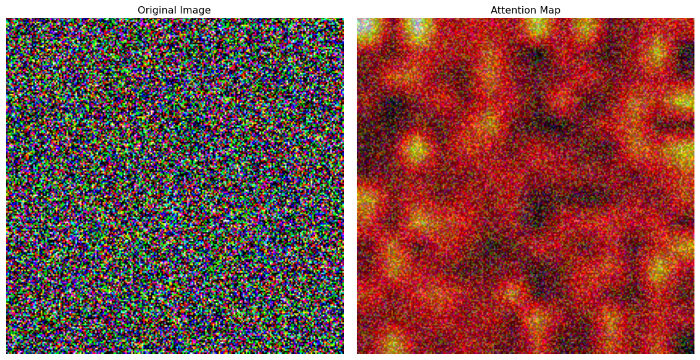
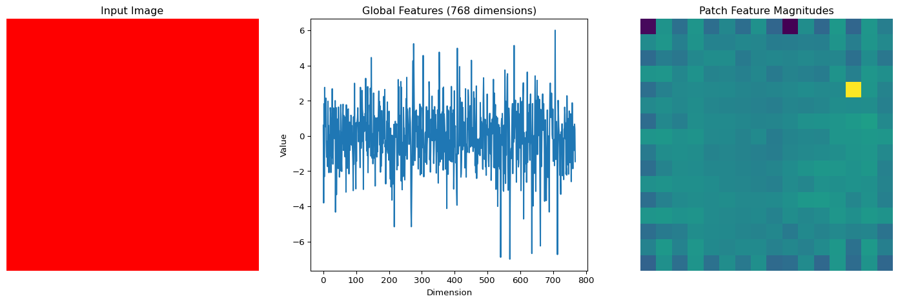
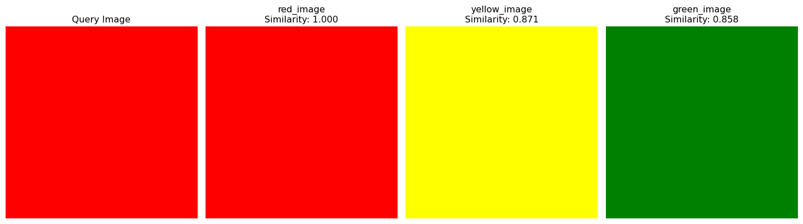

0.1 The Evolution of Vision: From AlexNet to DINOv2
Remember when we thought AlexNet was revolutionary in 2012? That was just the beginning! In the past decade, computer vision has evolved at breakneck speed:
2012: AlexNet - 8 layers, 60M parameters
2015: ResNet - 152 layers, skip connections
2017: Attention mechanisms emerge
2020: Vision Transformers - “Attention is all you need” for vision
2023: DINOv2 - Foundation models that understand everything
Today, we’re going to explore this incredible journey and show you how to use the most powerful vision models ever created!
0.2 The CNN Dynasty: ResNet, EfficientNet, and Beyond
Before transformers took over, CNNs ruled the vision world. Let’s explore the key innovations:
0.2.1 ResNet: The Skip Connection Revolution
Code
import torchimport torch.nn as nnimport torchvision.models as modelsimport matplotlib.pyplot as pltimport numpy as np# Understanding ResNet's key innovation: skip connectionsclass ResidualBlock(nn.Module):def__init__(self, in_channels, out_channels, stride=1):super(ResidualBlock, self).__init__()# Main pathself.conv1 = nn.Conv2d(in_channels, out_channels, 3, stride, 1)self.bn1 = nn.BatchNorm2d(out_channels)self.conv2 = nn.Conv2d(out_channels, out_channels, 3, 1, 1)self.bn2 = nn.BatchNorm2d(out_channels)# Skip connection (the magic!)self.skip = nn.Sequential()if stride !=1or in_channels != out_channels:self.skip = nn.Sequential( nn.Conv2d(in_channels, out_channels, 1, stride), nn.BatchNorm2d(out_channels) )def forward(self, x):# Main path out = torch.relu(self.bn1(self.conv1(x))) out =self.bn2(self.conv2(out))# Add skip connection (this is the key!) out +=self.skip(x) out = torch.relu(out)return out# Create a simple ResNet-like modelclass MiniResNet(nn.Module):def__init__(self, num_classes=1000):super(MiniResNet, self).__init__()self.conv1 = nn.Conv2d(3, 64, 7, 2, 3)self.bn1 = nn.BatchNorm2d(64)self.pool = nn.MaxPool2d(3, 2, 1)# Stack residual blocksself.layer1 =self._make_layer(64, 64, 2, 1)self.layer2 =self._make_layer(64, 128, 2, 2)self.layer3 =self._make_layer(128, 256, 2, 2)self.avgpool = nn.AdaptiveAvgPool2d((1, 1))self.fc = nn.Linear(256, num_classes)def _make_layer(self, in_channels, out_channels, num_blocks, stride): layers = [] layers.append(ResidualBlock(in_channels, out_channels, stride))for _ inrange(1, num_blocks): layers.append(ResidualBlock(out_channels, out_channels))return nn.Sequential(*layers)def forward(self, x): x =self.pool(torch.relu(self.bn1(self.conv1(x)))) x =self.layer1(x) x =self.layer2(x) x =self.layer3(x) x =self.avgpool(x) x = x.view(x.size(0), -1) x =self.fc(x)return x# Compare with official ResNetmini_resnet = MiniResNet(num_classes=1000)official_resnet = models.resnet18(pretrained=True)print("Mini ResNet:")print(f"Parameters: {sum(p.numel() for p in mini_resnet.parameters()):,}")print("\nOfficial ResNet-18:")print(f"Parameters: {sum(p.numel() for p in official_resnet.parameters()):,}")
Mini ResNet:
Parameters: 3,042,024
Official ResNet-18:
Parameters: 11,689,512
0.3 The Transformer Revolution: Vision Meets Attention
In 2020, everything changed when researchers asked: “What if we applied transformers to vision?”
0.3.1 Understanding Vision Transformers
Code
class PatchEmbedding(nn.Module):"""Convert image to sequence of patches"""def__init__(self, img_size=224, patch_size=16, in_channels=3, embed_dim=768):super().__init__()self.img_size = img_sizeself.patch_size = patch_sizeself.num_patches = (img_size // patch_size) **2# Patch embedding using convolutionself.projection = nn.Conv2d( in_channels, embed_dim, kernel_size=patch_size, stride=patch_size )def forward(self, x):# x shape: (batch_size, channels, height, width) x =self.projection(x) # (batch_size, embed_dim, num_patches_h, num_patches_w) x = x.flatten(2) # (batch_size, embed_dim, num_patches) x = x.transpose(1, 2) # (batch_size, num_patches, embed_dim)return xclass MultiHeadAttention(nn.Module):"""Multi-head self-attention mechanism"""def__init__(self, embed_dim=768, num_heads=12):super().__init__()self.embed_dim = embed_dimself.num_heads = num_headsself.head_dim = embed_dim // num_headsself.qkv = nn.Linear(embed_dim, embed_dim *3)self.proj = nn.Linear(embed_dim, embed_dim)def forward(self, x): batch_size, seq_len, embed_dim = x.shape# Generate Q, K, V qkv =self.qkv(x).reshape(batch_size, seq_len, 3, self.num_heads, self.head_dim) qkv = qkv.permute(2, 0, 3, 1, 4) # (3, batch_size, num_heads, seq_len, head_dim) q, k, v = qkv[0], qkv[1], qkv[2]# Compute attention attn = (q @ k.transpose(-2, -1)) / (self.head_dim **0.5) attn = torch.softmax(attn, dim=-1)# Apply attention to values out = (attn @ v).transpose(1, 2).reshape(batch_size, seq_len, embed_dim) out =self.proj(out)return out, attnclass TransformerBlock(nn.Module):"""Single transformer encoder block"""def__init__(self, embed_dim=768, num_heads=12, mlp_ratio=4.0):super().__init__()self.norm1 = nn.LayerNorm(embed_dim)self.attn = MultiHeadAttention(embed_dim, num_heads)self.norm2 = nn.LayerNorm(embed_dim)# MLP mlp_hidden_dim =int(embed_dim * mlp_ratio)self.mlp = nn.Sequential( nn.Linear(embed_dim, mlp_hidden_dim), nn.GELU(), nn.Linear(mlp_hidden_dim, embed_dim) )def forward(self, x):# Self-attention with residual connection attn_out, attn_weights =self.attn(self.norm1(x)) x = x + attn_out# MLP with residual connection x = x +self.mlp(self.norm2(x))return x, attn_weightsclass SimpleViT(nn.Module):"""Simplified Vision Transformer"""def__init__(self, img_size=224, patch_size=16, num_classes=1000, embed_dim=768, depth=12, num_heads=12):super().__init__()# Patch embeddingself.patch_embed = PatchEmbedding(img_size, patch_size, 3, embed_dim) num_patches =self.patch_embed.num_patches# Class token and position embeddingself.cls_token = nn.Parameter(torch.zeros(1, 1, embed_dim))self.pos_embed = nn.Parameter(torch.zeros(1, num_patches +1, embed_dim))# Transformer blocksself.blocks = nn.ModuleList([ TransformerBlock(embed_dim, num_heads) for _ inrange(depth) ])# Classification headself.norm = nn.LayerNorm(embed_dim)self.head = nn.Linear(embed_dim, num_classes)def forward(self, x): batch_size = x.shape[0]# Patch embedding x =self.patch_embed(x) # (batch_size, num_patches, embed_dim)# Add class token cls_tokens =self.cls_token.expand(batch_size, -1, -1) x = torch.cat((cls_tokens, x), dim=1)# Add position embedding x = x +self.pos_embed# Apply transformer blocks attention_maps = []for block inself.blocks: x, attn = block(x) attention_maps.append(attn)# Classification x =self.norm(x) cls_token_final = x[:, 0] # Use class token for classification out =self.head(cls_token_final)return out, attention_maps# Create a simple ViTsimple_vit = SimpleViT(depth=6, num_heads=8) # Smaller for demovit_params =sum(p.numel() for p in simple_vit.parameters())print(f"Simple ViT parameters: {vit_params:,}")# Test with dummy inputdummy_input = torch.randn(1, 3, 224, 224)output, attention_maps = simple_vit(dummy_input)print(f"Output shape: {output.shape}")print(f"Number of attention maps: {len(attention_maps)}")
Simple ViT parameters: 44,040,424
Output shape: torch.Size([1, 1000])
Number of attention maps: 6
0.3.2 Visualizing Attention: What Does the Model Look At?
Code
def visualize_attention(image, attention_maps, patch_size=16):"""Visualize what the vision transformer is looking at"""# Use attention from the last layer, first head attn = attention_maps[-1][0, 0] # (seq_len, seq_len)# Get attention from class token to all patches cls_attn = attn[0, 1:] # Exclude class token to class token attention# Reshape to spatial dimensions num_patches_per_side =int(len(cls_attn) **0.5) attn_map = cls_attn.reshape(num_patches_per_side, num_patches_per_side)# Resize to image size attn_map = torch.nn.functional.interpolate( attn_map.unsqueeze(0).unsqueeze(0), size=(224, 224), mode='bilinear' ).squeeze() plt.figure(figsize=(12, 6)) plt.subplot(1, 2, 1) plt.imshow(image.permute(1, 2, 0)) plt.title("Original Image") plt.axis('off') plt.subplot(1, 2, 2) plt.imshow(image.permute(1, 2, 0)) plt.imshow(attn_map.detach().numpy(), alpha=0.6, cmap='hot') plt.title("Attention Map") plt.axis('off') plt.tight_layout() plt.show()# Visualize attention (you would use a real image)dummy_image = torch.randn(3, 224, 224)visualize_attention(dummy_image, attention_maps)

0.4 Foundation Models: The DINOv2 Revolution
Now we reach the cutting edge: Foundation Models. DINOv2 (Distillation with No Labels v2) represents a paradigm shift:
Self-supervised learning: No labels needed!
Universal features: Works for any vision task
Incredible performance: Often beats supervised methods
0.4.1 Using DINOv2 with HuggingFace
Code
# Install required packages# !pip install transformers torch torchvisionfrom transformers import AutoImageProcessor, AutoModelfrom PIL import Imageimport requests# Load DINOv2 model and processormodel_name ="facebook/dinov2-base"processor = AutoImageProcessor.from_pretrained(model_name)model = AutoModel.from_pretrained(model_name)print(f"Loaded DINOv2 model: {model_name}")print(f"Model parameters: {sum(p.numel() for p in model.parameters()):,}")def extract_dinov2_features(image_path_or_url):"""Extract features using DINOv2"""# Load imageif image_path_or_url.startswith('http'): image = Image.open(requests.get(image_path_or_url, stream=True).raw)else: image = Image.open(image_path_or_url)# Process image inputs = processor(images=image, return_tensors="pt")# Extract featureswith torch.no_grad(): outputs = model(**inputs) features = outputs.last_hidden_state# Get CLS token (global image representation) cls_features = features[:, 0] # Shape: (1, 768)# Get patch features (local representations) patch_features = features[:, 1:] # Shape: (1, num_patches, 768)return {'cls_features': cls_features,'patch_features': patch_features,'image': image }# Example usagedef demo_dinov2_features():"""Demonstrate DINOv2 feature extraction"""# Create dummy image for demo (you would use real images) dummy_image = Image.new('RGB', (224, 224), color='red')# Save temporarily dummy_image.save('temp_image.jpg')# Extract features result = extract_dinov2_features('temp_image.jpg')print("DINOv2 Feature Extraction Results:")print(f"Global features shape: {result['cls_features'].shape}")print(f"Patch features shape: {result['patch_features'].shape}")# Visualize features plt.figure(figsize=(15, 5)) plt.subplot(1, 3, 1) plt.imshow(result['image']) plt.title("Input Image") plt.axis('off') plt.subplot(1, 3, 2) plt.plot(result['cls_features'].squeeze().numpy()) plt.title("Global Features (768 dimensions)") plt.xlabel("Dimension") plt.ylabel("Value") plt.subplot(1, 3, 3)# Visualize patch features as heatmap patch_norms = torch.norm(result['patch_features'].squeeze(), dim=1) patch_size =int(len(patch_norms) **0.5) patch_map = patch_norms.reshape(patch_size, patch_size) plt.imshow(patch_map.numpy(), cmap='viridis') plt.title("Patch Feature Magnitudes") plt.axis('off') plt.tight_layout() plt.show()return resultdemo_result = demo_dinov2_features()
Loaded DINOv2 model: facebook/dinov2-base
Model parameters: 86,580,480
DINOv2 Feature Extraction Results:
Global features shape: torch.Size([1, 768])
Patch features shape: torch.Size([1, 256, 768])

0.4.2 Building a DINOv2-Powered Image Similarity Engine
Code
class DINOv2SimilarityEngine:def__init__(self):self.processor = AutoImageProcessor.from_pretrained("facebook/dinov2-base")self.model = AutoModel.from_pretrained("facebook/dinov2-base")self.model.eval()self.image_database = {}def extract_features(self, image):"""Extract DINOv2 features from an image""" inputs =self.processor(images=image, return_tensors="pt")with torch.no_grad(): outputs =self.model(**inputs)# Use CLS token as global image representation features = outputs.last_hidden_state[:, 0]return featuresdef add_image(self, image_id, image):"""Add an image to the database""" features =self.extract_features(image)self.image_database[image_id] = {'features': features,'image': image }print(f"Added image '{image_id}' to database")def find_similar_images(self, query_image, top_k=5):"""Find most similar images in the database""" query_features =self.extract_features(query_image) similarities = {}for image_id, data inself.image_database.items():# Compute cosine similarity similarity = torch.cosine_similarity( query_features, data['features'], dim=1 ).item() similarities[image_id] = similarity# Sort by similarity sorted_similarities =sorted( similarities.items(), key=lambda x: x[1], reverse=True )return sorted_similarities[:top_k]def visualize_results(self, query_image, similar_images):"""Visualize similarity search results""" plt.figure(figsize=(15, 8))# Query image plt.subplot(2, len(similar_images) +1, 1) plt.imshow(query_image) plt.title("Query Image") plt.axis('off')# Similar imagesfor i, (image_id, similarity) inenumerate(similar_images): plt.subplot(2, len(similar_images) +1, i +2) plt.imshow(self.image_database[image_id]['image']) plt.title(f"{image_id}\nSimilarity: {similarity:.3f}") plt.axis('off') plt.tight_layout() plt.show()# Create similarity enginesimilarity_engine = DINOv2SimilarityEngine()# Demo with dummy images (you would use real images)def demo_similarity_engine():"""Demonstrate the similarity engine"""# Create some dummy images with different colors colors = ['red', 'blue', 'green', 'yellow', 'purple']for color in colors: dummy_img = Image.new('RGB', (224, 224), color=color) similarity_engine.add_image(f"{color}_image", dummy_img)# Query with a red image query_img = Image.new('RGB', (224, 224), color='red')# Find similar images similar = similarity_engine.find_similar_images(query_img, top_k=3)print("Most similar images:")for image_id, similarity in similar:print(f" {image_id}: {similarity:.3f}")# Visualize results similarity_engine.visualize_results(query_img, similar)demo_similarity_engine()
Added image 'red_image' to database
Added image 'blue_image' to database
Added image 'green_image' to database
Added image 'yellow_image' to database
Added image 'purple_image' to database
Most similar images:
red_image: 1.000
yellow_image: 0.871
green_image: 0.858

0.5 Comparing All Approaches: The Ultimate Showdown
Let’s compare all the approaches we’ve learned:
Code
class VisionModelComparison:def__init__(self):self.models = {'ResNet-18': models.resnet18(pretrained=True),'ResNet-50': models.resnet50(pretrained=True),'EfficientNet-B0': efficientnet_b0(pretrained=True),'ViT-Base': None, # Would load from transformers'DINOv2-Base': None# Already loaded above }def compare_models(self):"""Compare different vision models""" comparison_data = []for name, model inself.models.items():if model isnotNone: params =sum(p.numel() for p in model.parameters()) size_mb = params *4/ (1024*1024) comparison_data.append({'Model': name,'Parameters (M)': f"{params /1e6:.1f}",'Size (MB)': f"{size_mb:.1f}",'Year': self.get_year(name),'Type': self.get_type(name) })return comparison_datadef get_year(self, name): year_map = {'ResNet-18': 2015,'ResNet-50': 2015,'EfficientNet-B0': 2019,'ViT-Base': 2020,'DINOv2-Base': 2023 }return year_map.get(name, 'Unknown')def get_type(self, name):if'ResNet'in name or'EfficientNet'in name:return'CNN'elif'ViT'in name:return'Transformer'elif'DINOv2'in name:return'Foundation Model'return'Unknown'def visualize_comparison(self, data):"""Visualize model comparison"""import pandas as pd df = pd.DataFrame(data) plt.figure(figsize=(15, 10))# Parameters vs Year plt.subplot(2, 2, 1)for model_type in df['Type'].unique(): subset = df[df['Type'] == model_type] plt.scatter(subset['Year'], subset['Parameters (M)'].astype(float), label=model_type, s=100) plt.xlabel('Year') plt.ylabel('Parameters (Millions)') plt.title('Model Size Evolution') plt.legend() plt.grid(True)# Model types distribution plt.subplot(2, 2, 2) type_counts = df['Type'].value_counts() plt.pie(type_counts.values, labels=type_counts.index, autopct='%1.1f%%') plt.title('Model Types Distribution')# Size comparison plt.subplot(2, 2, 3) plt.bar(df['Model'], df['Size (MB)'].astype(float)) plt.xticks(rotation=45) plt.ylabel('Size (MB)') plt.title('Model Size Comparison')# Timeline plt.subplot(2, 2, 4) timeline_data = df.sort_values('Year') plt.plot(timeline_data['Year'], range(len(timeline_data)), 'o-')for i, (idx, row) inenumerate(timeline_data.iterrows()): plt.annotate(row['Model'], (row['Year'], i), xytext=(5, 0), textcoords='offset points') plt.xlabel('Year') plt.ylabel('Model Index') plt.title('Vision Models Timeline') plt.grid(True) plt.tight_layout() plt.show()# Run comparisoncomparison = VisionModelComparison()comparison_data = comparison.compare_models()print("Vision Models Comparison:")print("-"*80)for data in comparison_data:print(f"{data['Model']:15} | {data['Year']} | {data['Type']:15} | "f"{data['Parameters (M)']:>8} M | {data['Size (MB)']:>8} MB")comparison.visualize_comparison(comparison_data)
You’ve just explored the cutting edge of computer vision! From ResNet’s skip connections to DINOv2’s self-supervised learning—you now understand the models that power today’s AI applications. Next, we’ll build something amazing with all this knowledge!
Reuse
CC BY-NC-SA 4.0
Citation
BibTeX citation:
@online{2025,
author = {, Hasan},
title = {Modern {Vision} {Models:} {CNNs,} {Vision} {Transformers,}
and {DINOv2}},
date = {2025-01-22},
url = {https://hasangoni.quarto.pub/hasan-blog-post/posts/series/cv-foundations/08-modern-vision-models.html},
langid = {en}
}